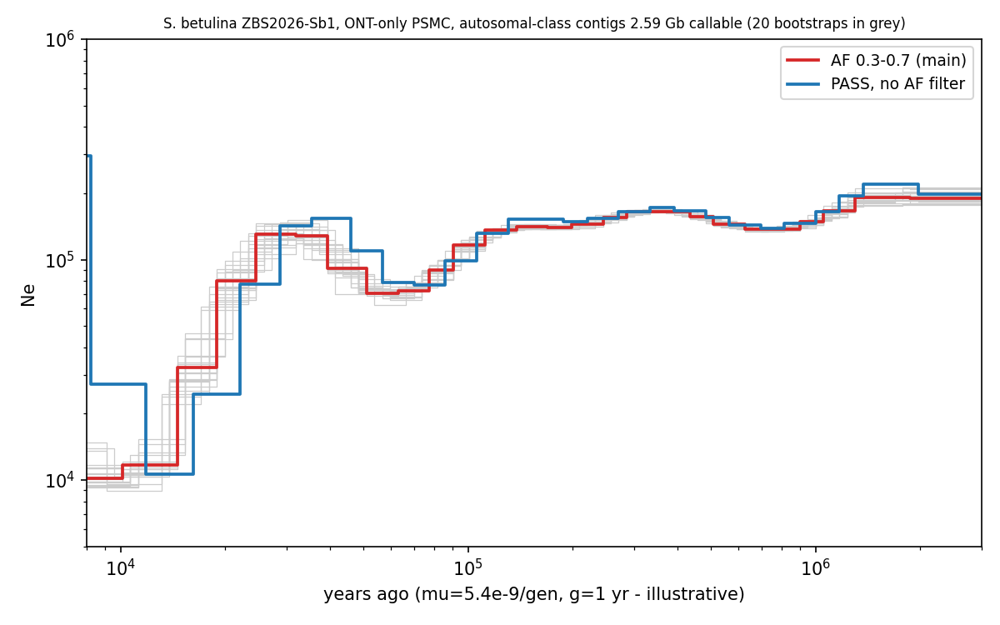
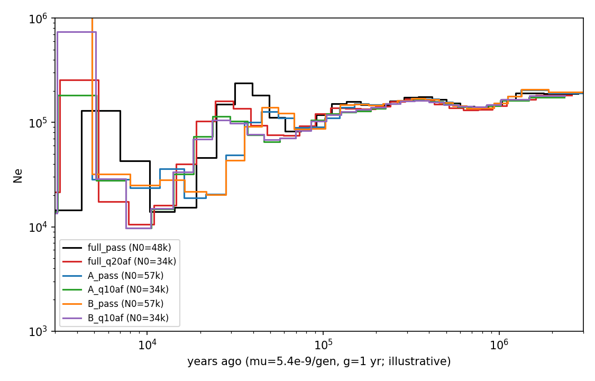

Verdict unpublished, for review
- Not needed on this individual for PSMC, gene phylogeny or within-individual SINE indels. The ONT reads (104 Gb, 35×, R10.4.1-class) give a het-SNP false-positive rate of about 1% after an allele-fraction filter (measured on the hemizygous X, where a male has no true hets), two independent read halves reproduce 88–90% of each other's calls and the same PSMC curve, the 20 PSMC bootstraps are tight, and BUSCO is 99.2% complete.
- Needed for the population-level goals, whichever platform: MSMC/MSMC2 beyond one genome (2–4 individuals), SINE insertion frequencies and population genetics need more individuals, not more reads of Sb1. Cheapest route: 15–20× PCR-free Illumina on 4–8 additional individuals, mapped to this assembly.
- Optional on Sb1: 30× Illumina (80–90 Gb) as orthogonal truth for the base-level QV, the false/missed het rate and homopolymer-indel polishing. The ONT-only estimate of the assembly's accuracy is QV ~43 (upper bound on the error), with indels in homopolymers dominating, which matters for gene models; self-polishing with the homozygous Clair3 calls is possible without Illumina.
- Not verified: the sequencing chemistry and basecaller model (no tags in the read headers), the mutation rate and generation time of Sicista (PSMC time and Ne axes are illustrative), the sex (inferred male from X depth), and the recall of true heterozygotes (no orthogonal call set).
Assembly QC (hifiasm primary, ONT reads)
| Metric | Value |
|---|---|
| Contigs / total length | 1,144 / 2.992 Gb, no gaps |
| N50 / L50; N75 / N90; largest | 18.25 Mb / 48; 8.03 Mb / 1.93 Mb; 84.3 Mb |
| Contigs ≥10 Mb / ≥1 Mb / ≥100 kb | 91 (2.11 Gb, 70.5%) / 292 (2.80 Gb, 93.7%) / 750 (2.98 Gb, 99.5%); 394 contigs <100 kb hold 14.3 Mb |
| GC | 42.5% (contigs ≥1 Mb: 36.5–54.3%, median 42.1%) |
| BUSCO mammalia_odb10 (n = 9,226) | C 99.2% [S 97.1%, D 2.1%], F 0.2%, M 0.6% (the S. trizona reference: C 98.3%) |
| Merqury with ONT k-mers | QV 58.3, completeness 93.4% (relative only: the k-mers come from the same reads) |
| Telomeres (TTAGGG, ≥60 bp in the terminal 10 kb) | none of the 620 contigs ≥200 kb has both ends; 30 have one |
| GenomeScope2 (ONT 21-mers) | haploid 2.69 Gb, heterozygosity 0.50–0.57% (unreliable with ONT k-mers); assembly is 11% larger |
| Mitochondrial contamination | 83 mt-like contigs (1.37 Mb) to remove from the nuclear set; 305 nuclear NUMT loci (mitogenome page) |
| Read depth (minimap2 map-ont, all reads) | median 35.1× in 10-kb windows (5–95%: 15–46×); 75.5% of windows within 0.75–1.25× of the median |
| Half-depth sequence | 10.8% of bp at MAPQ ≥10; 6% (179 Mb, 494 contigs) stays half-depth with MAPQ-0 reads counted, the rest is low-MAPQ repeat |
| Sex chromosomes | 81 half-depth contigs ≥1 Mb have no ≥90%-identity counterpart in the assembly (not unpurged haplotigs); 89.3% of their alignment to S. trizona goes to one chromosome (OZ418353.1, 148 Mb; 165× enriched) and 3.4% to OZ418354.1 (20 Mb): the sample is a male, X (+Y) about 175 Mb, excluded from autosomal PSMC |
| Diploid-depth contigs | 292 contigs, 2,671 Mb (89%); 212 contigs ≥1 Mb = 2.64 Gb. Largest: ptg000057l 84.3, ptg000018l 75.0, ptg000003l 62.5, ptg000566l 58.8, ptg000116l 56.8 Mb |
| Reads | 13.5 M reads, 104.25 Gb (35×), N50 12.05 kb, mean Q15.8, 21.5% of reads above Q20; read headers carry no basecaller-model tags |
ONT-only variant calling: how reliable are the heterozygotes?
Clair3 (sup v5.0.0 model for R10.4.1), first on a test set of 5 autosomal contigs (337 Mb, 35×), then genome-wide.
| Test | Result |
|---|---|
| Heterozygous SNP density, 35× | 627,351 PASS het SNPs = 1,860 per Mb (0.19%); 83% have allele fraction 0.35–0.65 (median 0.46); Ti/Tv 1.64 (true mammalian SNPs: about 2.0–2.2, so some transversion-rich false calls, of the order of 15%) |
| Two disjoint read halves (17.5× each) | 659k het SNPs each; 87.8% of one half's calls are in the other without filtering; 99.3% of the shared set is recovered at 35×; 99.6% of 35× calls are in the union. Calls private to one half (80k each) have Ti/Tv 2.9, so a half overestimates θ by about 17% |
| Hard filters | Fixed QUAL/AF thresholds change het density 7-fold (1,950 → 261 per Mb) and are depth-dependent: an allele-fraction filter is used instead of fixed QUAL across depths |
| False-positive rate from the hemizygous X | On 94.8 Mb of X-class contigs (5 contigs with >600 het/Mb excluded as PAR/duplicated): 163 het SNP/Mb unfiltered = 8.4% of the autosomal 17× rate; with AF 0.35–0.65: 14/Mb, about 1% of the autosomal filtered rate. False hets have median AF 0.29, true ones 0.46 |
| Assembly base accuracy, ONT-only estimate | Homozygous-alt calls (reads disagree with the assembly): 5,160 SNPs + 11,505 indels on 337 Mb = 49 per Mb = 4.9 × 10-5, QV about 43 (upper bound on the error); indels in homopolymers dominate |
| Phasing (WhatsHap, ONT reads) | 99.1% of het SNPs phased; blocks span most of each contig (ptg000566l, 58.8 Mb, in 2 blocks; block NG50 48.8 Mb): haplotype-resolved calls are feasible from ONT alone |
PSMC from ONT alone
Genome-wide: Clair3 on the 351 diploid-depth contigs (2.684 Gb; mt-like and X-class excluded), callable mask MAPQ ≥10 and depth 18–62× (2.589 Gb callable), 100-bp bins, het-bin fraction 13.5% (AF 0.3–0.7) or 14.5% (PASS only).
psmc -N25 -t15 -r5 -p "4+25*2+4+6", 20 bootstraps on the AF-filtered set. μ = 5.4 × 10-9 per generation and 1 generation = 1 year are illustrative, not verified for Sicista.

| Time (years ago, illustrative scale) | Ne, AF-filtered set (bootstrap 2.5–97.5%) |
|---|---|
| 2 My | ~190k (177–211k) |
| 1 My | ~148k (144–157k) |
| 300 ky | ~166k (160–168k) |
| 100 ky | ~117k (109–126k) |
| 50 ky | ~71k (69–85k) |
| 20 ky | ~80k (45–96k) |
| 10 ky | ~12k (9–12k) |
| present-day N0 | ~48k (AF-filtered) / ~55k (PASS only) |

SINE insertion polymorphism within Sb1
Sniffles2 (2.8.1) on the ONT reads against the assembly, autosomal-class contigs (2.68 Gb): 70,853 PASS insertions and deletions ≥50 bp; 46,423 of 100–700 bp with sequence, of which 25,313 (54.5%) match the Dip SINE bank (Dip_a2 14,437; Dip_a1 8,255; DIP 2,565): 13,820 deletions and 11,493 insertions relative to the assembly, about 9.4 per Mb, median length 244 bp. All are heterozygous, as expected within one individual. On the test subset, 89–90% of the 100–700 bp calls from one read half are found in the other and 98% of the half-calls are in the 35× set. These are within-individual heterozygous indels; allele frequencies need a population sample, which is the Illumina that is worth buying.
Files and provenance
- Analysis on therioserver,
~/Sicista2026/qc/:sbet_ont.bam(all reads on the primary assembly),calls/(test set),calls_full/,calls_X/,sv_full/,final/(genome-wide PSMC),models/. Assembly:assembly/primary_eval/hifiasm_primary.p_ctg.fa. - Tools: minimap2 map-ont, Clair3 (r1041_e82_400bps_sup_v500), WhatsHap, psmc, Sniffles2 2.8.1, BUSCO (mammalia_odb10), Merqury, GenomeScope2.
- Full notes with every number: QC_NOTES.md. Figures: genome-wide PSMC, subset tests.
- Sb1 is not in a public archive yet; the mitogenome, nuclear mt pseudogenes and the SINE scan have their own pages.